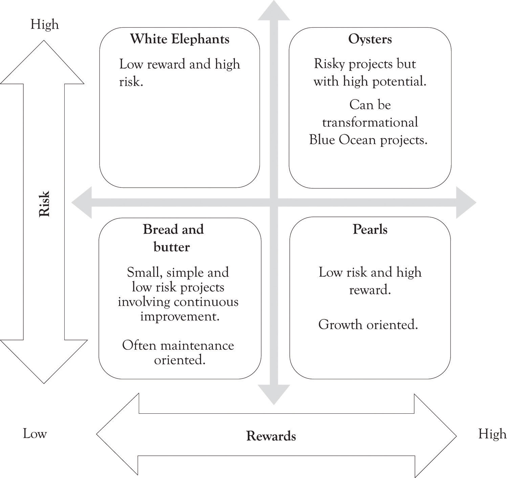

After a company decides on a strategic action to pursue based on the strategic action model, it needs to decide how it will proceed with the action, that is, what kind of project it will launch to implement the action, how much risk it can bare and how much of a reward it wants to gain. Most companies want to minimize risk and maximize reward in launching a project. O’Sullivan and DooleyO’Sullivan and Dooley (2008). have categorized projects in terms of their risk and reward as being pearls, oysters, bread and butter projects, and white elephants (see Figure 14.6 "Project Categorization (Modified from O'Sullivan and Dooley)"). It would be nice if all investments translated into pearls and a few ended up being successful oysters, but that is not possible. Therefore, when selecting a project, companies take into account the strategic action they will pursue. For example, if the strategic action chosen is aggressive growth, it may want to develop a project falling into the category of pearls. If the strategic action chosen is switching-up growth, it may want to develop a project falling into the category of oysters. On the other hand, if the strategic action selected is postponement, it may want to play with a bread and butter project, a small, simple, low-risk project, and wait for additional information.
Figure 14.6 Project Categorization (Modified from O'Sullivan and Dooley)
